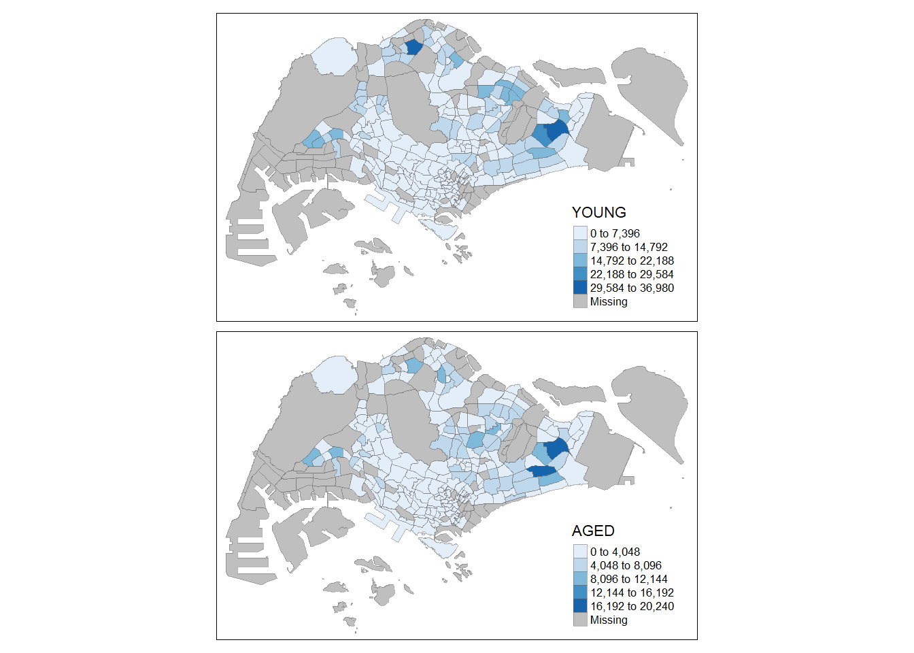
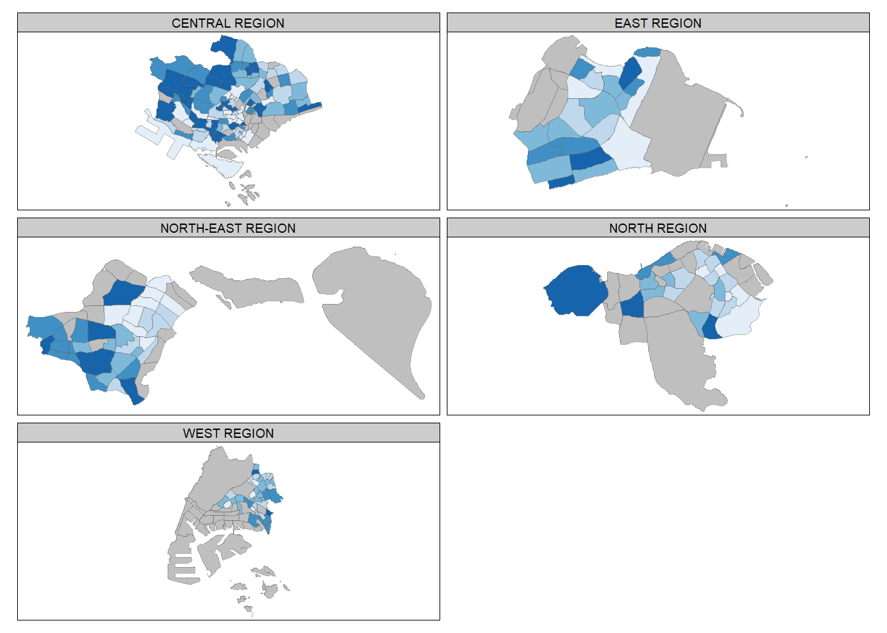
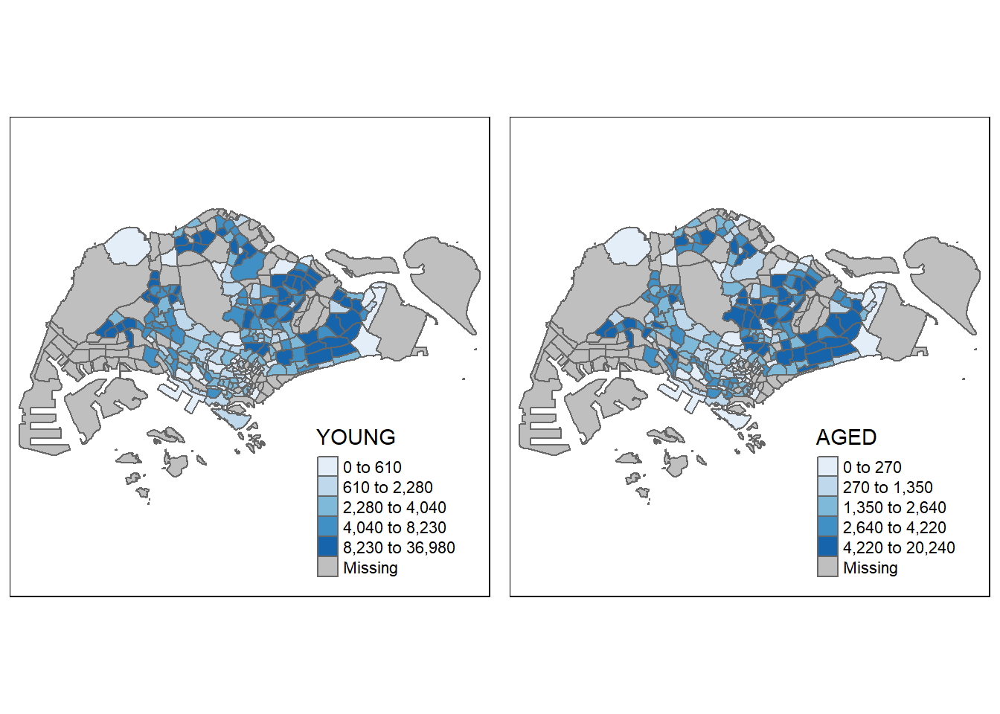

pacman::p_load(sf, tidyverse, tmap)
tmap_options(show.messages = FALSE)Choropleth Mapping with R
For this hands-on exercise, we learned how to plot choropleth maps by using an R package called tmap
This exercise is based on Chapter 2 of Dr Kam’s online book which can be accessed here.
Getting Started
Data Sources
The exercise will use the following publicly available datasets:
Master Plan 2014 Subzone Boundary from data.gov.sg
Singapore Residents by Planning Area / Subzone, Age Group, Sex and Type of Dwelling, June 2011-2020 from singstat.gov
The first one is geospatial data and was also used in the previous hands-on exercise. The second source is for aspatial data but the PA and SZ fields in it allows geocoding into the shapefile.
Installing and launching R packages
This exercise will make use of three R packages: sf, tidyverse and tmap. We have already introduced the first two in the last exercise: tidyverse is a family of R packages used for data wrangling and visualization, while sf is used for importing, managing and processing geospatial data. Tidyverse is made up of multiple packages which include tidyr and dplyr which will be the specific packages where the functions we use will come from.
Tmap stands for thematic map and will enable us to create the functional choropleth maps that go beyond the capabilities of plot()
The code chunk below uses p_load() of pacman package to check if the packages are installed in the computer. It installs them first if they are not. It then loads them into R.
Data Loading and Preparation
Importing Geospatial Data into R
We first import MP14_SUBZONE_WEB_PL using st_read() function by providing the path and the layer name as parameters.
mpsz <- st_read(dsn = "data/geospatial",
layer = "MP14_SUBZONE_WEB_PL")Reading layer `MP14_SUBZONE_WEB_PL' from data source
`C:\drkrodriguez\ISSS626-GAA\Hands-on\Hands-On_Ex02\data\geospatial'
using driver `ESRI Shapefile'
Simple feature collection with 323 features and 15 fields
Geometry type: MULTIPOLYGON
Dimension: XY
Bounding box: xmin: 2667.538 ymin: 15748.72 xmax: 56396.44 ymax: 50256.33
Projected CRS: SVY21We can examine the contents by calling the dataframe like in the code chunk below. This function call only shows the first 10 features or rows of the dataframe.
mpszSimple feature collection with 323 features and 15 fields
Geometry type: MULTIPOLYGON
Dimension: XY
Bounding box: xmin: 2667.538 ymin: 15748.72 xmax: 56396.44 ymax: 50256.33
Projected CRS: SVY21
First 10 features:
OBJECTID SUBZONE_NO SUBZONE_N SUBZONE_C CA_IND PLN_AREA_N
1 1 1 MARINA SOUTH MSSZ01 Y MARINA SOUTH
2 2 1 PEARL'S HILL OTSZ01 Y OUTRAM
3 3 3 BOAT QUAY SRSZ03 Y SINGAPORE RIVER
4 4 8 HENDERSON HILL BMSZ08 N BUKIT MERAH
5 5 3 REDHILL BMSZ03 N BUKIT MERAH
6 6 7 ALEXANDRA HILL BMSZ07 N BUKIT MERAH
7 7 9 BUKIT HO SWEE BMSZ09 N BUKIT MERAH
8 8 2 CLARKE QUAY SRSZ02 Y SINGAPORE RIVER
9 9 13 PASIR PANJANG 1 QTSZ13 N QUEENSTOWN
10 10 7 QUEENSWAY QTSZ07 N QUEENSTOWN
PLN_AREA_C REGION_N REGION_C INC_CRC FMEL_UPD_D X_ADDR
1 MS CENTRAL REGION CR 5ED7EB253F99252E 2014-12-05 31595.84
2 OT CENTRAL REGION CR 8C7149B9EB32EEFC 2014-12-05 28679.06
3 SR CENTRAL REGION CR C35FEFF02B13E0E5 2014-12-05 29654.96
4 BM CENTRAL REGION CR 3775D82C5DDBEFBD 2014-12-05 26782.83
5 BM CENTRAL REGION CR 85D9ABEF0A40678F 2014-12-05 26201.96
6 BM CENTRAL REGION CR 9D286521EF5E3B59 2014-12-05 25358.82
7 BM CENTRAL REGION CR 7839A8577144EFE2 2014-12-05 27680.06
8 SR CENTRAL REGION CR 48661DC0FBA09F7A 2014-12-05 29253.21
9 QT CENTRAL REGION CR 1F721290C421BFAB 2014-12-05 22077.34
10 QT CENTRAL REGION CR 3580D2AFFBEE914C 2014-12-05 24168.31
Y_ADDR SHAPE_Leng SHAPE_Area geometry
1 29220.19 5267.381 1630379.3 MULTIPOLYGON (((31495.56 30...
2 29782.05 3506.107 559816.2 MULTIPOLYGON (((29092.28 30...
3 29974.66 1740.926 160807.5 MULTIPOLYGON (((29932.33 29...
4 29933.77 3313.625 595428.9 MULTIPOLYGON (((27131.28 30...
5 30005.70 2825.594 387429.4 MULTIPOLYGON (((26451.03 30...
6 29991.38 4428.913 1030378.8 MULTIPOLYGON (((25899.7 297...
7 30230.86 3275.312 551732.0 MULTIPOLYGON (((27746.95 30...
8 30222.86 2208.619 290184.7 MULTIPOLYGON (((29351.26 29...
9 29893.78 6571.323 1084792.3 MULTIPOLYGON (((20996.49 30...
10 30104.18 3454.239 631644.3 MULTIPOLYGON (((24472.11 29...Importing Attribute Data into R
Our remaining data is in a csv file which we will load into a dataframe called popdata using read_csv() which comes from the readr package that is included in tidyverse.
popdata <- read_csv("data/aspatial/respopagesexfa2011to2020.csv")Rows: 738492 Columns: 7
── Column specification ────────────────────────────────────────────────────────
Delimiter: ","
chr (5): PA, SZ, AG, Sex, FA
dbl (2): Pop, Time
ℹ Use `spec()` to retrieve the full column specification for this data.
ℹ Specify the column types or set `show_col_types = FALSE` to quiet this message.We can quickly examine the data by calling the dataframe name. This shows that popdata consists of 738K records or rows with 7 attributes or columns.
popdata# A tibble: 738,492 × 7
PA SZ AG Sex FA Pop Time
<chr> <chr> <chr> <chr> <chr> <dbl> <dbl>
1 Ang Mo Kio Ang Mo Kio Town Centre 0_to_4 Males <= 60 0 2011
2 Ang Mo Kio Ang Mo Kio Town Centre 0_to_4 Males >60 to 80 10 2011
3 Ang Mo Kio Ang Mo Kio Town Centre 0_to_4 Males >80 to 100 30 2011
4 Ang Mo Kio Ang Mo Kio Town Centre 0_to_4 Males >100 to 120 80 2011
5 Ang Mo Kio Ang Mo Kio Town Centre 0_to_4 Males >120 20 2011
6 Ang Mo Kio Ang Mo Kio Town Centre 0_to_4 Males Not Available 0 2011
7 Ang Mo Kio Ang Mo Kio Town Centre 0_to_4 Females <= 60 0 2011
8 Ang Mo Kio Ang Mo Kio Town Centre 0_to_4 Females >60 to 80 10 2011
9 Ang Mo Kio Ang Mo Kio Town Centre 0_to_4 Females >80 to 100 40 2011
10 Ang Mo Kio Ang Mo Kio Town Centre 0_to_4 Females >100 to 120 90 2011
# ℹ 738,482 more rowsWe will use the 2020 information from this to build a new data table popdata2020 which includes the following variables:
PAandSZgive information on the location (planning area and township)YOUNGis the population for those aged 0 to 24ECONOMY ACTIVEis the population for those aged 25 to 64AGEDis the population for those aged 65 and aboveTOTALis the total population across all age groupsDEPENDENCYis the ratio between young and aged against the economy active group
Data Wrangling
To generate the required table from popdata, we will use pivot_wider() of tidyr package, mutate(), filter(), group_by() and select() of dplyr package. All of these are included in tidyverse.
popdata2020 <- popdata %>%
filter(Time == 2020) %>%
group_by(PA, SZ, AG) %>%
summarise(`POP` = sum(`Pop`)) %>%
ungroup()%>%
pivot_wider(names_from=AG,
values_from=POP) %>%
mutate(YOUNG = rowSums(.[3:6])
+rowSums(.[12])) %>%
mutate(`ECONOMY ACTIVE` = rowSums(.[7:11])+
rowSums(.[13:15]))%>%
mutate(`AGED`=rowSums(.[16:21])) %>%
mutate(`TOTAL`=rowSums(.[3:21])) %>%
mutate(`DEPENDENCY` = (`YOUNG` + `AGED`)
/`ECONOMY ACTIVE`) %>%
select(`PA`, `SZ`, `YOUNG`,
`ECONOMY ACTIVE`, `AGED`,
`TOTAL`, `DEPENDENCY`)`summarise()` has grouped output by 'PA', 'SZ'. You can override using the
`.groups` argument.We can check that the transformation has been executed properly by displaying the new dataframe.
popdata2020# A tibble: 332 × 7
PA SZ YOUNG `ECONOMY ACTIVE` AGED TOTAL DEPENDENCY
<chr> <chr> <dbl> <dbl> <dbl> <dbl> <dbl>
1 Ang Mo Kio Ang Mo Kio Town Cen… 1440 2640 770 4850 0.837
2 Ang Mo Kio Cheng San 6660 15380 6080 28120 0.828
3 Ang Mo Kio Chong Boon 6150 13970 6450 26570 0.902
4 Ang Mo Kio Kebun Bahru 5500 12040 5080 22620 0.879
5 Ang Mo Kio Sembawang Hills 2130 3390 1270 6790 1.00
6 Ang Mo Kio Shangri-La 3970 8430 3540 15940 0.891
7 Ang Mo Kio Tagore 2220 4160 1520 7900 0.899
8 Ang Mo Kio Townsville 4720 11430 5050 21200 0.855
9 Ang Mo Kio Yio Chu Kang 0 0 0 0 NaN
10 Ang Mo Kio Yio Chu Kang East 1190 2230 740 4160 0.865
# ℹ 322 more rowsJoining the attribute and geospatial data
To use this attribute data for our analysis, we need to join it with the geospatial data. The first step will be to convert the PA and SZ values to uppercase to make sure that they follow the same convention as the geospatial data. We use the mutate_at() function to apply this transformation.
popdata2020 <- popdata2020 %>%
mutate_at(.vars = vars(PA, SZ),
.funs = list(toupper)) %>%
filter(`ECONOMY ACTIVE` > 0)The next step is to use left_join() from dplyr to merge the two tables using SZ.
mpsz_pop2020 <- left_join(mpsz, popdata2020,
by = c("SUBZONE_N" = "SZ"))As the left side is an sf dataframe, the resulting object is also an sf dataframe and we write this into a file to store for future use without rerunning all the transformations so far.
write_rds(mpsz_pop2020, "data/mpszpop2020.rds")Choropleth Mapping Geospatial Data using tmap
Choropleth maping involves visualising enumeration units such as countries, provinces and counties using patterns or (graduated) colors.
There are two preparation approaches available using tmap:
Using qtm() for quickly generating a thematic map
Using tmap elements to highly customize and plot a map
Plotting a choropleth map quickly using qtm()
qtm() is a convenient way to produce a thematic or choropleth map. It provides a good default or initial visualization.
The code chunk below draws a standard choropleth map using the values from DEPENDENCY as the fill.
tmap_mode("plot")
qtm(mpsz_pop2020,
fill = "DEPENDENCY")
The tmap_mode("plot") produces a static plot. To produce an interactive plot, tmap_mode("view") should be used instead.
qtm() takes the sf dataframe as its first argument. The fill argument defines which attribute to map.
Creating a choropleth map by using tmap’s elements
While convenient, the downside of qtm() is that it makes controlling the aesthetics of individual layers harder to control. Using tmap’s drawing elements allows more customization, and allows the production of higher quality maps.
tm_shape(mpsz_pop2020)+
tm_fill("DEPENDENCY",
style = "quantile",
palette = "Blues",
title = "Dependency ratio") +
tm_layout(main.title = "Distribution of Dependency Ratio by planning subzone",
main.title.position = "center",
main.title.size = 1.2,
legend.height = 0.45,
legend.width = 0.35,
frame = TRUE) +
tm_borders(alpha = 0.5) +
tm_compass(type="8star", size = 2) +
tm_scale_bar() +
tm_grid(alpha =0.2) +
tm_credits("Source: Planning Sub-zone boundary from Urban Redevelopment Authorithy (URA)\n and Population data from Department of Statistics DOS",
position = c("left", "bottom"))We go through the different elements plotted and the respective functions below.
Drawing a base map
The basic building block of tmap is tm_shape() followed by one or more layer elements.
In the code chunk below, tm_shape() is used to define the input data and then tm_polygons() draws the planning subzone polygons.
tm_shape(mpsz_pop2020) +
tm_polygons()
Drawing a choropleth map using tm_polygons()
The code chunk below generates a choropleth map of the dependency ratio by planning subzone by passing DEPENDENCY to tm_polygons().
tm_shape(mpsz_pop2020)+
tm_polygons("DEPENDENCY")
A few points on tm_polygons():
The default binning used is called “
pretty”. We will go more into data classification methods laterThe default color scheme is
YlOrRd(Yellow Orange Red) of ColorBrewer. We will also go more into color schemes laterBy default, missing values are shaded grey
Drawing a choropleth map using tm_fill() and tm_border()
tm_polygons() is actually a wrapper of two other functions: tm_fill() and tm_border().
tm_fill() shades the polygons using the default color scheme. The code chunk below draws the choropleth map with just this element.
tm_shape(mpsz_pop2020)+
tm_fill("DEPENDENCY")
tm_borders() adds the borders of the shapefile onto the map. We add this element to the previous code to produce a similar plot to the one generated with tm_polygons().
tm_shape(mpsz_pop2020)+
tm_fill("DEPENDENCY") +
tm_borders(lwd = 0.1, alpha = 1)
tm_borders() has the following (optional) arguments:
alphadefines the transparency and takes a value of 0 (totally transparent) to 1 (totally opaque)coldefines the border colourlwddefines the border line width (default 1)ltydefines the border line type (default solid)
Data Classification Methods on tmap
Data classification refers to grouping (a large number of) observations into data ranges or classes. tmap provides ten data classification methods which include: fixed, sd, equal, pretty, quantile, kmeans, hclust, bclust, fisher, and jenks
The data classification method can be defined by using the style argument in tm_fill() or tm_polygons()
Plotting choropleth maps with built-in classification methods
The code below produces a plot using quantile data classification with 5 classes.
tm_shape(mpsz_pop2020)+
tm_fill("DEPENDENCY",
n = 5,
style = "quantile") +
tm_borders(alpha = 0.5)The code below produces a plot using equal data classification with 5 classes. Note that the previous chart produces evenly distributed classes, while this new chart has almost all but one zone in the first class.
tm_shape(mpsz_pop2020)+
tm_fill("DEPENDENCY",
n = 5,
style = "equal") +
tm_borders(alpha = 0.5)
The code below produces a plot using jenks data classification. By changing the style argument, the other data classification methods can be used.
tm_shape(mpsz_pop2020)+
tm_fill("DEPENDENCY",
style = "jenks") +
tm_borders(alpha = 0.5)
Plotting Choropleth Maps with custom break
The builtin styles compute the class breaks or boundaries internally. To override this, the breakpoints can be set explicitly using the breaks argument of tm_fill()
The breaks defined will include the minimum and maximum. Therefore, to define n classes, n+1 breakpoints should be defined in the breaks argument.
We first run some descriptive statistics on DEPENDENCY before we define the breakpoints
summary(mpsz_pop2020$DEPENDENCY) Min. 1st Qu. Median Mean 3rd Qu. Max. NA's
0.0000 0.7113 0.7926 0.8561 0.8786 19.0000 92 Based on the distribution, say we define the breakpoints for five classes to be 0.6, 0.7, 0.8 and 0.9 to split. We need to include a minimum, 0, and a maximum, 20, for the breaks argument.
tm_shape(mpsz_pop2020)+
tm_fill("DEPENDENCY",
breaks = c(0, 0.60, 0.70, 0.80, 0.90, 20)) +
tm_borders(alpha = 0.5)Colour Schemes
tmap supports user-defined colour maps, and pre-defined colour maps from the RColorBrewer package.
Using ColourBrewer palette
To change the colour map, we assign a value to the palette argument of tm_fill() as shown in the code below
tm_shape(mpsz_pop2020)+
tm_fill("DEPENDENCY",
n = 6,
style = "quantile",
palette = "Blues") +
tm_borders(alpha = 0.5)
The choropleth map is shaded in blue where a darker shade corresponds to a higher value of DEPENDENCY. To reverse this behavior, we can add a “-” prefix to the passed value.
tm_shape(mpsz_pop2020)+
tm_fill("DEPENDENCY",
n = 6,
style = "quantile",
palette = "-Blues") +
tm_borders(alpha = 0.5)Map Layouts
Map layout refers to the combination of all map elements into a cohesive map. Aside from the objects, the other elements include the title, the scale bar, a compass, margins and aspect ratios.
Map Legend
Several options are provided to adjust the placement, format and appearance of the legend.
tm_shape(mpsz_pop2020)+
tm_fill("DEPENDENCY",
style = "jenks",
palette = "Blues",
legend.hist = TRUE,
legend.is.portrait = TRUE,
legend.hist.z = 0.1) +
tm_layout(main.title = "Distribution of Dependency Ratio by planning subzone \n(Jenks classification)",
main.title.position = "center",
main.title.size = 1,
legend.height = 0.45,
legend.width = 0.35,
legend.outside = FALSE,
legend.position = c("right", "bottom"),
frame = FALSE) +
tm_borders(alpha = 0.5)
Map Style
A wide variety of layout settings can be changed by calling tmap_style()
The codeblock below shows the map using the classic style.
tm_shape(mpsz_pop2020)+
tm_fill("DEPENDENCY",
style = "quantile",
palette = "-Greens") +
tm_borders(alpha = 0.5) +
tmap_style("classic")
Cartographic Furniture
tmap provides options to add other elements like a compass, scale, and grid lines. In the code chunk below, tm_compass(), tm_scale_bar() and tm_grid() are used to add these elements.
tm_shape(mpsz_pop2020)+
tm_fill("DEPENDENCY",
style = "quantile",
palette = "Blues",
title = "No. of persons") +
tm_layout(main.title = "Distribution of Dependency Ratio \nby planning subzone",
main.title.position = "center",
main.title.size = 1.2,
legend.height = 0.45,
legend.width = 0.35,
frame = TRUE) +
tm_borders(alpha = 0.5) +
tm_compass(type="8star", size = 2) +
tm_scale_bar(width = 0.15) +
tm_grid(lwd = 0.1, alpha = 0.2) +
tm_credits("Source: Planning Sub-zone boundary from Urban Redevelopment Authorithy (URA)\n and Population data from Department of Statistics DOS",
position = c("left", "bottom"))
Note that the above map still uses the classic style. To revert to the default style, use the code chunk below.
tmap_style("white")tmap style set to "white"other available styles are: "gray", "natural", "cobalt", "col_blind", "albatross", "beaver", "bw", "classic", "watercolor" Drawing Small Multiple Choropleth Maps
Small multiple maps or facet maps are composed of multiple maps arranged side-by-side. (in a grid, stacked vertically, lined up) Small multiple maps allow visualization of how spatial relationships change with respect to one variable. (e.g., time)
There are three ways to define small multiples in tmap:
by assigning multiple values to at least one aesthetic argument,
by defining a group-by variable in
tm_facets(), andby creating multiple stand-alone maps with
tmap_arrange()
Assigning multiple values to at least one of the aesthetic arguments
In the code below, small multiple maps are created by passing a list of (numeric) columns as the col argument of tm_fill() Each map depicts a different column or attribute.
tm_shape(mpsz_pop2020)+
tm_fill(c("YOUNG", "AGED"),
style = "equal",
palette = "Blues") +
tm_layout(legend.position = c("right", "bottom")) +
tm_borders(alpha = 0.5) +
tmap_style("white")tmap style set to "white"other available styles are: "gray", "natural", "cobalt", "col_blind", "albatross", "beaver", "bw", "classic", "watercolor" 
In the next code, two parameters are passed to palette argument to result to different colour maps for the each small multiple.
tm_shape(mpsz_pop2020)+
tm_polygons(c("DEPENDENCY","AGED"),
style = c("equal", "quantile"),
palette = list("Blues","Greens")) +
tm_layout(legend.position = c("right", "bottom"))
By defining a group-by variable in tm_facets()
In the code below, a small multiple of each region is created by using tm_facets()
tm_shape(mpsz_pop2020) +
tm_fill("DEPENDENCY",
style = "quantile",
palette = "Blues",
thres.poly = 0) +
tm_facets(by="REGION_N",
free.coords=TRUE,
drop.units=TRUE) +
tm_layout(legend.show = FALSE,
title.position = c("center", "center"),
title.size = 20) +
tm_borders(alpha = 0.5)
By creating multiple stand-alone maps and using tmap_arrange()
In the following code, two maps are defined individually and then displayed side by side using tmap_arrange()
youngmap <- tm_shape(mpsz_pop2020)+
tm_polygons("YOUNG",
style = "quantile",
palette = "Blues")
agedmap <- tm_shape(mpsz_pop2020)+
tm_polygons("AGED",
style = "quantile",
palette = "Blues")
tmap_arrange(youngmap, agedmap, asp=1, ncol=2)
Mapping Spatial Objects Meeting Selection Criterion
Instead of using small multiples to look at a particular subset of the data, you can also use a selection criteria or a mask to only map objects meeting a particular condition. The code below produces a map for only the Central Region.
tm_shape(mpsz_pop2020[mpsz_pop2020$REGION_N=="CENTRAL REGION", ])+
tm_fill("DEPENDENCY",
style = "quantile",
palette = "Blues",
legend.hist = TRUE,
legend.is.portrait = TRUE,
legend.hist.z = 0.1) +
tm_layout(legend.outside = TRUE,
legend.height = 0.45,
legend.width = 5.0,
legend.position = c("right", "bottom"),
frame = FALSE) +
tm_borders(alpha = 0.5)Warning in pre_process_gt(x, interactive = interactive, orig_crs =
gm$shape.orig_crs): legend.width controls the width of the legend within a map.
Please use legend.outside.size to control the width of the outside legend